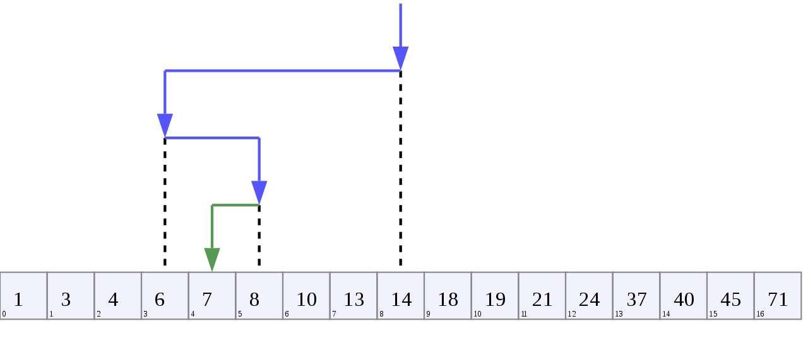

Binary Search - Algorithm Study
Introduction
**B**inary Search is a search method used to find an object in a data set. This is much faster compared to the Linear Search algorithm we saw in a previous post.
This algorithm works on the Divide and Conquer principle. Binary Search gets its speed by essentially dividing the list/array in half in each iteration, thus reducing the dataset size for the next iteration.
Imagine searching for an element in a rather large dataset. Searching for an element one by one using Linear Search would take n iterations. In a worst case scenario, if the element being searched is not present in the dataset or is at the end of the dataset, the time taken to find the object/element would be proportional to the size of the dataset.
The element of interest is returned if it is present in the dataset, else a NULL/None value is.
Note:
- Binary search will only work effectively on a Sorted collection.
- The code implementation will need minor changes depending on how the dataset is sorted, ie.. either in an increasing order or in a decreasing order.
Performance
1. Worst-case performance: log(n)
As discussed in the post on, Linear Search a worst-case analysis is done with the upper bound of the running time of the algorithm. ie.. the case when the maximum number of operations are needed/executed to find/search the element of interest in the dataset.
Of course, the worst-case scenario for any search algorithms is when the element of interest is not present in the dataset. The maximum number of searches has to be done in such a case, and it still ends up with no fruitful result. A similar but less worse case is when the element is found in the final (or somewhere near the last) iteration.
Due to the divide-and-conquer method, the maximum number of iterations needed for a dataset of n elements is, log(n) where the log base is 2.
Hence, for a data set of 10240 elements, Binary Search takes a maximum of 13 iterations.
[code language=“python”] In [1]: import math
In [2]: math.log(10240, 2) Out[2]: 13.321928094887364 [/code] For a data set of 50,000 elements, Binary Search takes 16 iterations in the worst case scenario while a Linear Search may take 50,000 iterations in a similar case.
[code language=“python”] In [1]: import math
In [2]: math.log(50000, 2) Out[2]: 15.609640474436812 [/code] ie.. the Worst case for Binary search takes log(n) iterations to find the element.
2. Best-case performance: O(1)
The best case scenario is when the element of interest is found in the first iteration itself. Hence the best-case would be where the search finishes in one iteration.
ie.. The best-case scenario would be O(1).
How does Binary Search work?
Imagine a sorted dataset of 100 numbers and we’re searching for 98 is in the list. A simple search would start from index 0 , moves to the element at index 1, progresses element by element until the one in interest is found. Since we’re searching for 98, it’ll take n iterations depending on the number of elements between the first element in the dataset and 98.
Binary Search uses the following method, provided the dataset is sorted.
- Find the length of the data set.
- Find the lowest (index
0), highest (indexn), and the middle index of the dataset. - Find the subsequent elements residing in the first, last, and middle index.
- Check if the element of interest is the middle element.
- If not, check if the element-of-interest is higher or lower than the middle element.
- If it is higher, assuming the dataset is sorted in an increasing order, move the lower index to one above the middle index.
- if it is lower, move the highest index to one below the middle index.
- Check if the element of interest is the middle element in the new/shorter dataset.
- Continue till the element of interest is found.
[caption id=“attachment_2310” align=“alignnone” width=“1280”] Binary Search - Source: Wikipedia[/caption]
The figure above shows how Binary Search works on a dataset of 16 elements, to find the element 7.
- Index
0, Index16, and the middle index are noted. - Subsequent values/elements at these indices are found out as well.
- Check if the element of interest
7is equal to, lower, or higher than the middle element14at index8. - Since it’s lower and the dataset is sorted in an increasing order, the search moves to the left of the middle index, ie.. from index
0to index7. - -—
- The lower index is now
0, the higher index is now7, and the middle index is now3, the element in the middle index is6. - Check if the element of interest
7is lower or higher than the middle element6at index3. - Since it’s higher and the dataset is sorted in an increasing order, the search moves to the right of the middle index, ie.. from index
4to index 7. - -—
- So on and so forth.. till we arrive at the element of interest, ie..
7.
As noted earlier, the data set is divided into half in each iteration. A numeric representation on how Binary search progress can be seen as:
100 elements -> 50 elements -> 25 elements -> 12 elements -> 6 elements - 3 elements -> 1 element
Code
Example 1 : (Data set sorted in Increasing order)
[code language=“python”] def binary_search(my_list, item): low_position = 0 high_position = len(my_list) - 1
while low_position = high_position: mid_position = (low_position + high_position) // 2 mid_element = my_list[mid_position]
if mid_element == item: print("\nYour search item {0} is at index {1}".format( item, mid_position)) return mid_element
elif mid_element <= item: high_position = mid_position - 1
else: low_position = mid_position + 1 return None
if __name__ == “__main__": my_list = [1, 2, 3, 4, 5, 6] binary_search(my_list, 3) [/code]
Example 2 : (Same as above, with statements on how the search progresses)
[code language=“python”] def binary_search(my_list, item):
# Find and set the low and high positions of the data set # Note that these are not the values, but just positions. low_position = 0 high_position = len(my_list) - 1
# Calculate the Complexity import math complexity = math.ceil(math.log(len(my_list), 2))
# Print some info on the dataset print("\nDataset size : {0} elements”.format(len(my_list))) print(“Element of interest : {0}".format(item)) print(“Maximum number of iterations to find {0} : {1}\n”.format( item, complexity))
while low_position <= high_position:
# Find the middle position from the low and high positions mid_position = (low_position + high_position) // 2
# Find the element residing in the middle position of the data set. mid_element = my_list[mid_position]
print(“Element at min index : {0}".format(my_list[low_position])) print(“Element at max index : {1}".format(high_position, my_list[high_position])) print(“Element at mid index {0} : {1}".format(mid_position, mid_element))
if mid_element == item: print("\nYour search item {0} is at index {1}".format( item, mid_position)) return mid_element
elif mid_element > item: high_position = mid_position - 1 print("{0} in the left subset, omitting the right subset\n”.format(item))
else: low_position = mid_position + 1 print("{0} in the right subset, omitting the left subset\n”.format(item))
print(“Element of interest not in dataset\n”) return None
if __name__ == “__main__": my_list = [1, 2, 3, 4, 5, 6, 7, 8, 9, 10, 11, 12, 13] binary_search(my_list, 13) [/code]
Observations:
- Binary Search needs a Sorted dataset to work, either increasing or decreasing.
- It finds the element of interest in logarithmic time, hence is also known as,
Logarithmic Search. - Binary Search searches through a dataset of
nelements inlog(n)iterations, in the worst case scenario.
NOTE:
All the examples used in this blog are available at https://github.com/arvimal/DataStructures-and-Algorithms-in-Python, with more detailed notes.